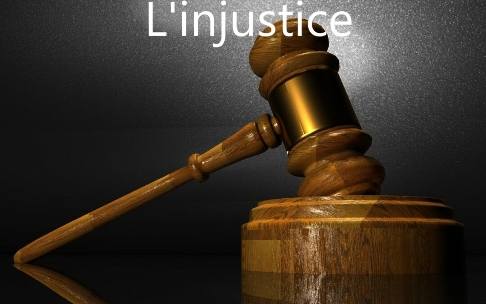

L'injustice est une réalité douloureuse qui persiste dans de nombreuses sociétés, niant aux individus et aux groupes des droits et des opportunités essentiels. Elle se manifeste souvent à travers des discriminations basées sur la race, le genre, la classe sociale, la religion ou d'autres caractéristiques. L'injustice peut prendre de nombreuses formes, allant de l'inégalité devant la loi à l'accès inéquitable aux ressources et aux avantages. Elle crée des disparités flagrantes et perpétue un cercle vicieux d'oppression. Combattre l'injustice nécessite un engagement collectif pour remettre en question les structures et les systèmes qui favorisent ces inégalités. Cela implique également de donner une voix aux marginalisés, de sensibiliser aux problèmes sous-jacents et de promouvoir des réformes sociales et politiques significatives. En luttant contre l'injustice, nous travaillons à créer une société plus équitable, où chacun a la possibilité de vivre dans la dignité et d'épanouir son potentiel sans être entravé par des barrières injustes.
